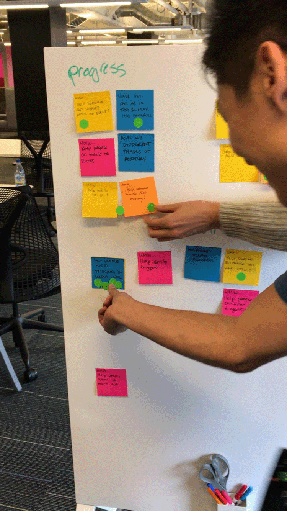
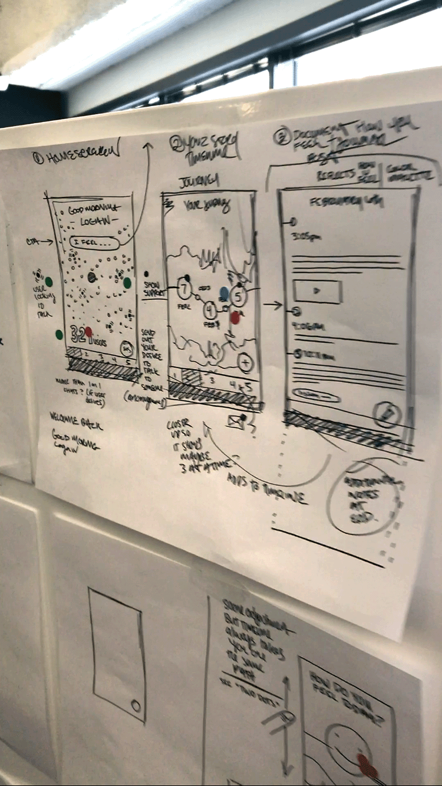
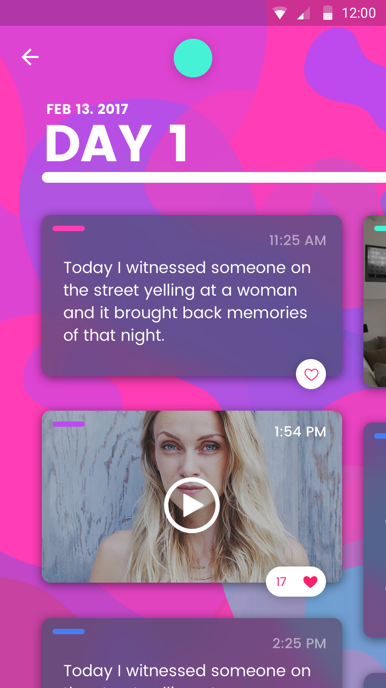
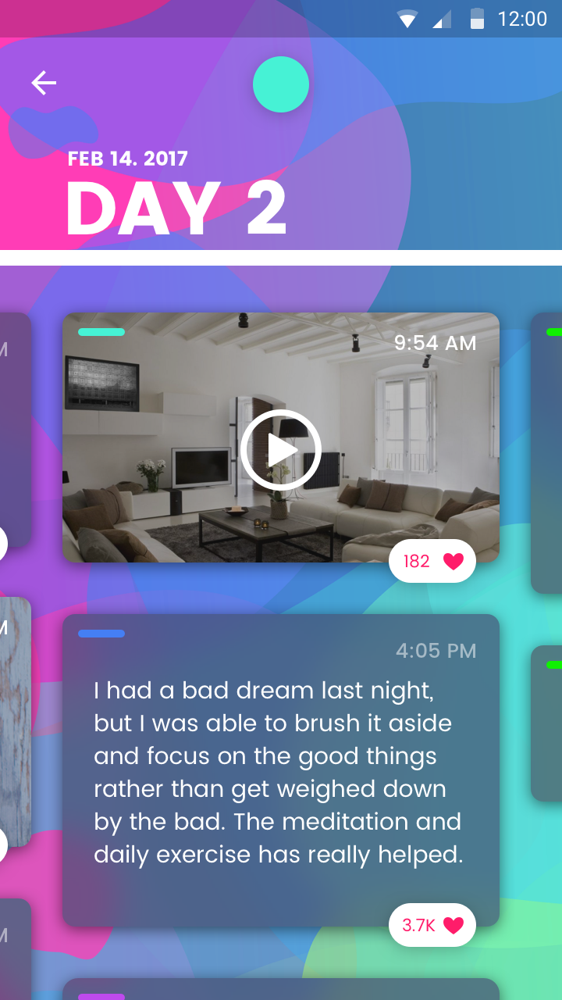
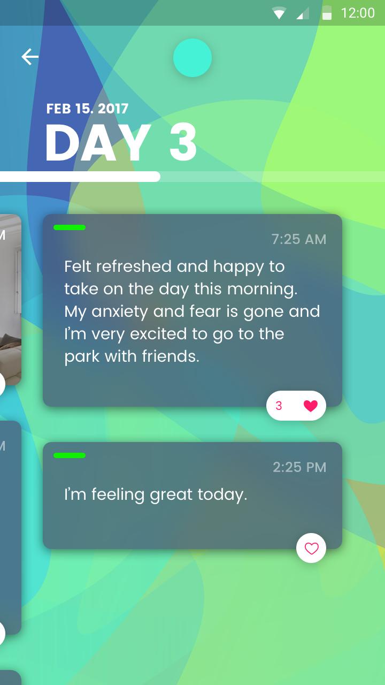
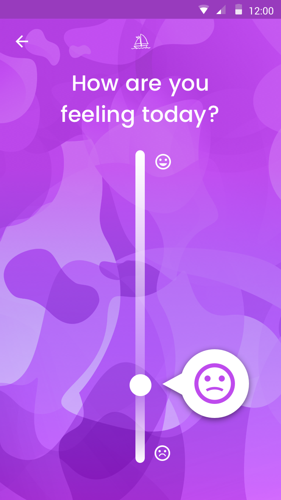
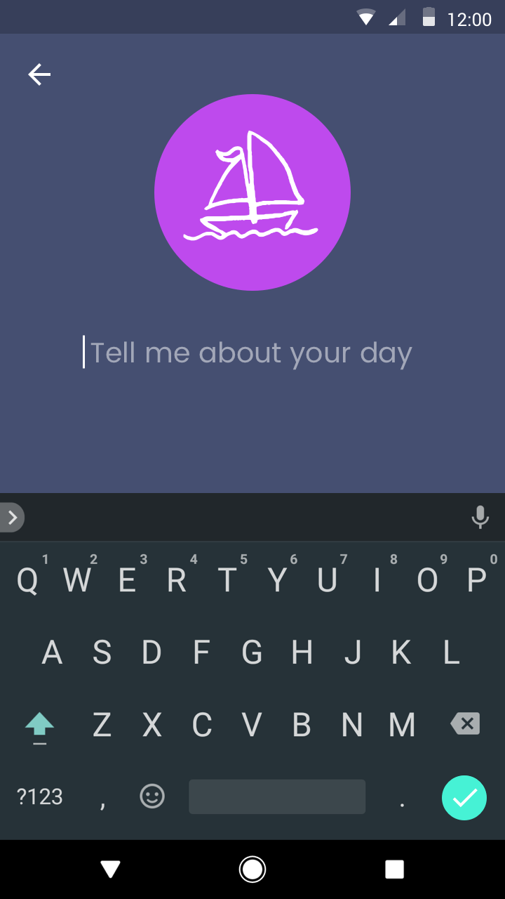
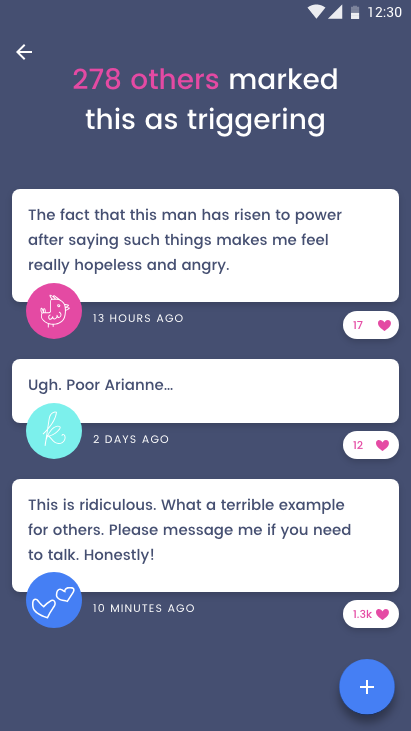

While attending a conference in 2017, I connected with a Sprint Master at Google, who invited me to their San Francisco office to take part in a three-day sprint alongside a mix of roughly 25 designers and developers. My group was given the broad challenge of creating a new, innovative health app — and while researching, we found a big gap in support for survivors of sexual trauma. We naturally felt this subject was worthy of focusing on.


Over three tiring but rewarding days of research, collaboration, and design, we created Safespace: an app giving survivors a place to safely and anonymously find community and support. Users can journal and track daily emotions, share their experiences in daily blogs, and connect with people who've been through something similar — without fear of judgment. We also experimented with an in-app trigger warnings that would overlap into other apps like Google Chrome.






At the end of our three day design sprint we presented our prototypes to a panel of Google Venture representatives for critique and questioning. Overall the panel was very impressed and had a very positive sentiment. This short and sweet adventure was an excellent exercise in practicing rapid prototyping and also sharpened my android app design skills.